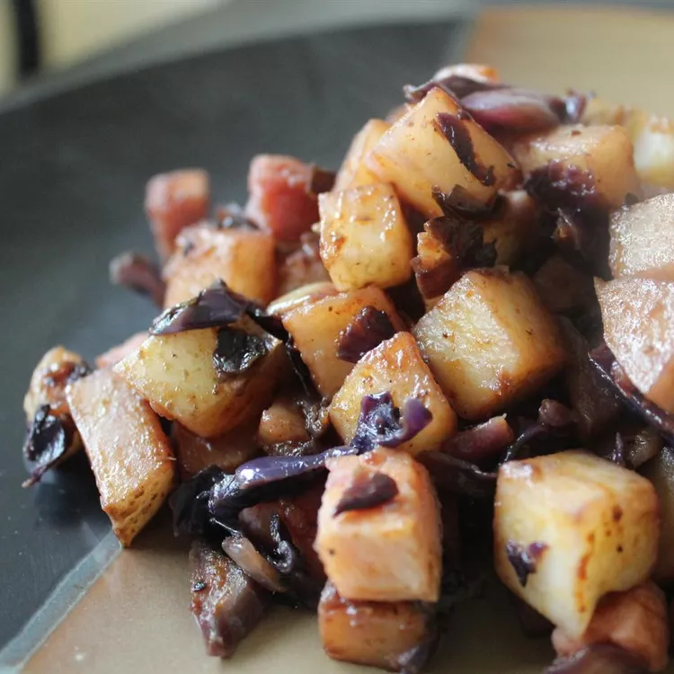

Skillet Ham, Cabbage, and Potatoes

Description
Ham, cabbage, and potatoes are simmered over low heat in one skillet and seasoned with paprika; tasty and satisfying.
Ingredients
- 2 tablespoons butter
- 1 onion, chopped
- 1 small head cabbage, coarsely chopped
- ¼ cup water
- 3 large potatoes, scrubbed and sliced
- 1 dash seasoning salt
- 1 dash paprika, or to taste
- 2 cups cubed cooked ham
Steps
- Heat butter in a skillet over medium heat; stir in onion. Cook and stir until the onion has softened and turned translucent, about 5 minutes.
- Stir in cabbage. Add water, cover, and simmer gently on low heat for ten minutes.
- Add potatoes and stir well; cover and simmer for 10 more minutes, adding additional water if needed.
- Sprinkle seasoning salt and paprika over cabbage and potatoes; simmer, covered, until cabbage is soft and potatoes are fork-tender. Mix in ham; simmer until heated through.